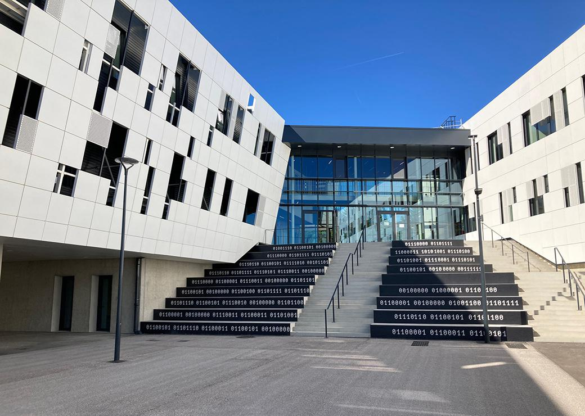
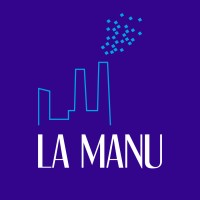
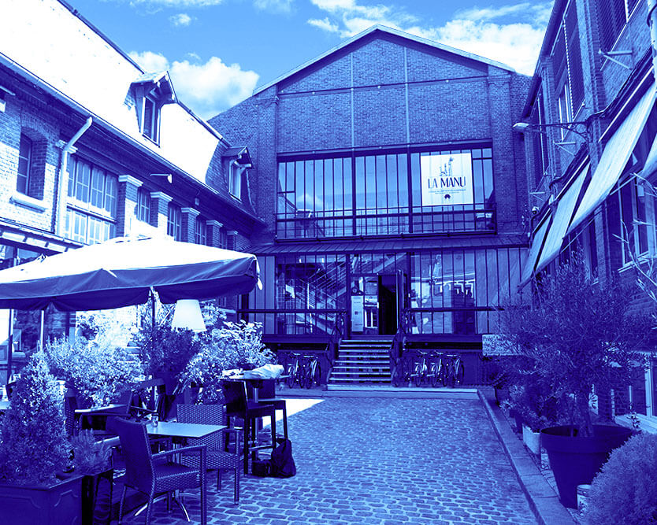

3
Présentation
Portfolio

Accueil
Profil

Compétences

Branly

1re année a LA MANU

2ème année a LA MANU

Marius Hazart
marius.hazart@gmail.com
Accueil
Profil
Compétences
Branly
1re année a LA MANU
2ème année a LA MANU


Marius Hazart
2ème année à LA MANU,
Établissement d'Enseignement Supérieur des Métiers du Numérique
Profil
Je suis un développeur principalement orienté back-end passionné d’algorithmie. Mon expertise repose sur la conception, le développement, et la maintenance de l'infrastructure serveur, ainsi que sur la gestion efficace des bases de données. Mon objectif est de fournir des solutions technologiques efficaces qui améliorent les performances et l'évolutivité des applications
Baccalauréat STI2D, option Systèmes d'Information et Numérique (SIN), mention Bien
J'ai obtenu mon Baccalauréat STI2D avec mention Bien au Lycée Edouard Branly. Initialement inscrit en filière générale avec une option en Numérique et Sciences Informatiques (NSI), j'ai rapidement découvert ma véritable passion pour les métiers du numérique. C'est pourquoi j'ai choisi de me réorienter vers la filière STI2D, spécialisée en Systèmes d'Information et Numérique (SIN). Cette décision a renforcé mon désir de devenir un développeur back-end compétent en mettant l'accent sur l'application concrète des concepts informatiques.
Deuxième année de Master en Métiers du Numérique
Je suis actuellement en deuxième annéee de formation à La Manu, où je poursuis un Master en Métiers du Numérique. Au cours de cette formation, j'ai acquis des compétences essentielles en développement, notamment en JavaScript (JS), Vue.js, PHP, Python, Java, ainsi que Symfony pour le développement web. J'ai également développé des compétences en gestion de bases de données MySQL, en PAO (Publication Assistée par Ordinateur), en UX/UI (Expérience Utilisateur/Interface Utilisateur), et en langages web tels qu'HTML et CSS.
Compétences
Les niveaux représentés sont affiliés a mon niveau de compréhension et développement dans chaques domaines plutôt que mon niveau de compétences
Addressage
J'ai développé un programme en Python pour la gestion d'adresses IP, permettant de convertir une adresse en binaire, identifier sa classe, calculer le masque de sous-réseau, et afficher des informations essentielles. Ce projet a démontré ma maîtrise des adresses IP et de la programmation en Python.
Pierre Papier Ciseaux
J'ai créé un jeu fonctionnel du Pierre-Papier-Ciseaux en utilisant JavaScript, avec la particularité de sauvegarder les scores même en cas de rechargement de la page ou de sortie du jeu. Ce projet m'a permis de développer ma compréhension de JavaScript, d'explorer les fonctionnalités de stockage local (localStorage) et de maîtriser la gestion des événements pour une expérience de jeu fluide et interactive.
District noir
J'ai collaboré avec mon équipe pour développer le jeu du District Noir en Python, en utilisant la console pour interagir directement avec le code. Ce projet a été axé sur le renforcement de notre logique algorithmique, et il nous a permis de nous entraîner à travailler en groupe sur un projet orienté vers l'algorithmie en utilisant le langage Python.
PoPchill
J'ai créé un site web interactif, PopChill, qui utilise JavaScript pour interroger une API et afficher des informations détaillées sur les films, y compris les affiches, les descriptions, et un système de favoris. Ce projet a renforcé mes compétences en développement web et en manipulation d'API pour offrir une expérience cinématographique personnalisée.
La caverne aux infos
J'ai conçu et développé le site web "La Caverne aux Infos" qui présente des articles de journaux de manière dynamique en utilisant PHP et MySQL. Ce projet a impliqué l'envoi de requêtes SQL à une API pour récupérer et afficher les articles, tout en utilisant un système de cookies pour personnaliser les préférences de l'utilisateur. Nous avons également mis en place un système de catégories pour organiser les sujets des articles, offrant ainsi une expérience d'actualités plus ciblée et personnalisée.